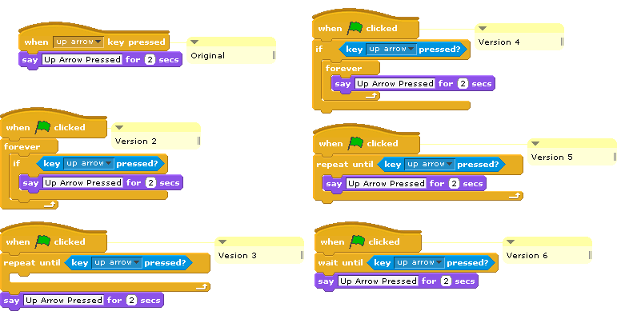

Which versions shown below provide the same functionality as the Original script, in which the character will say Up Arrow Pressed for two seconds every time the up arrow key is pressed?

Versions 3 and 6 detect the first up arrow pressed, but then stop and do not detect additional up arrows. Versions 4 and 5 keep saying "Up Arrow Pressed" forever. (Version 4 does this only if you are pressing up arrow at the moment when you click the green flag. Version 5 stops saying it when you press the key.)